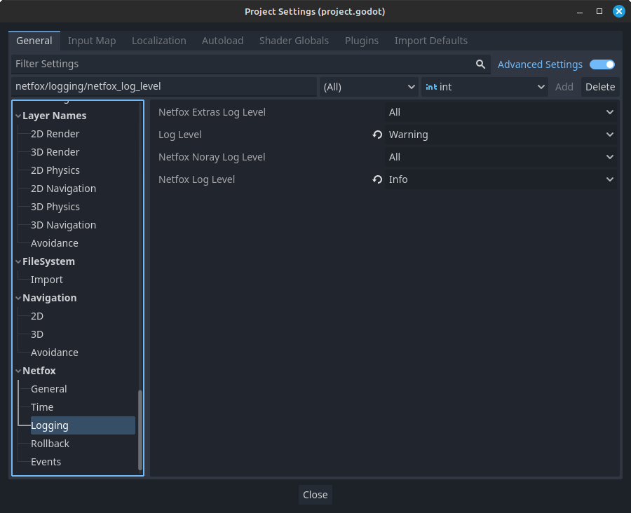

Logging
During runtime, it can be useful to print some diagnostic info to the console - this is called logging. The netfox addons include various log messages to help with debugging. This is useful when running the game locally, but also helps if there's log files players can attach with their bug reports.
Depending on your game, different logs may be needed. To accommodate this, netfox can be configured to omit certain log messages.
Log levels
Each log message can be in one of the following categories:
- Error
- Something goes irrecoverably wrong, or something that should never happen just happened
- Warning
- Something goes wrong, but can be handled
- Info
- Useful information on expected behaviour
- Debug
- Verbose messages, to help debug general code flow
- Trace
- Extremely verbose messages, to help follow the code flow to the smallest detail
Log messages
Log messages from any of the netfox addons are prefixed with log level, module and logging class / object:
[INF][netfox.noray::Noray] Trying to connect to noray at tomfol.io:8890
[DBG][netfox.noray::Noray] Resolved noray host to 172.105.69.73
[INF][netfox.noray::Noray] Connected to noray at 172.105.69.73:8890
[DBG][netfox.noray::Noray] Saved OID: 6JeDH07eVuFu5SO0p-6X2
[DBG][netfox.noray::Noray] Bound UDP to port 47769
[DBG][netfox.noray::Noray] Saved PID: vw6_N9sT2N0tXaYke9SV9ReWCgtdsOdfeL1o9zkCL93U7KzBjgMZ7hShBXpf_WYOB_TthARt4GfzH1iLxXR7iR3WCebzx9Sf108e8wUoqwTJqm9bIdVxyYoQUBFT9h2M
[INF][netfox.noray::Noray] Registered local port 47769 to remote
This makes it easier to gather info at a glance.
Settings

These settings control the minimum log level - e.g. if the log level is set to info, only messages at or above the info level will be logged, namely info, warning and error. If the setting is set to all, all messages are logged.
Log levels can be controlled globally and per addon. A message will be logged if it passes both logging level checks.
For example, if the Log Level setting is at Warning and the Netfox Log Level is at Info, only warning and error messages are logged for netfox. This happens because the Log Level is more restrictive than the Netfox Log Level setting.
Note that you don't need to install all netfox addons for the logging settings to work. If an addon is not installed, its log level setting is simply ignored.